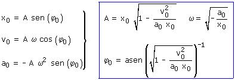
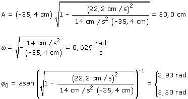
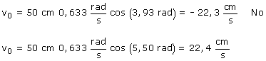
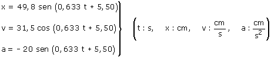

Ecuaciones del movimiento:
Aplicación: (Situación inicial) Datos: t = 0, x0 = -35.4 cm, v0 = 22.2 cm/s, a0 = 14 cm/s2   No se añade k·2π a las soluciones porque buscamos la fase en la primera oscilación (k =0) Para determinar cual es el valor correcto comprobamos la velocidad correspondiente  La fase inicial es 5,50 rad Ninguna de las velocidades coincide con la dada lo cual se
debe a las aproximaciones de las operacio-nes. Lo importante es que el
valor de 5,50 rad para la fase inicial da una velocidad inicial negativa. Ecuaciones del movimiento completas:  |